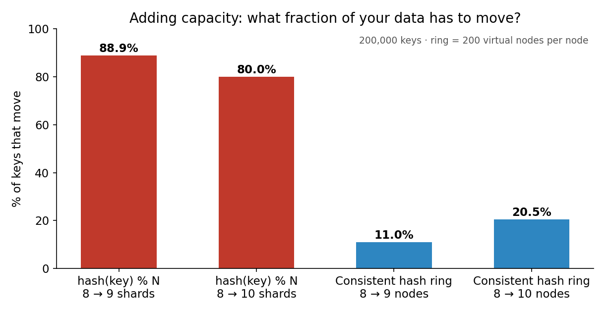
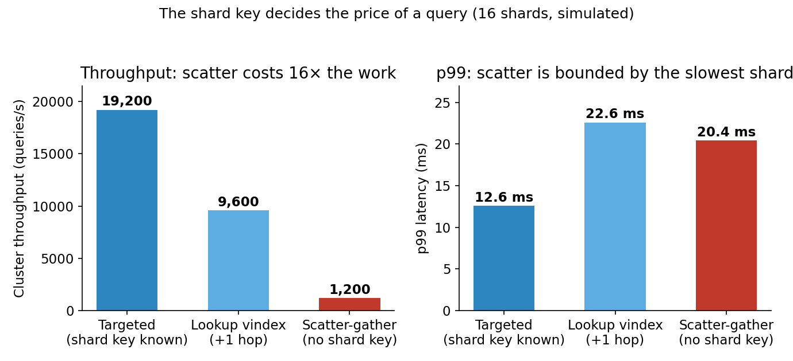
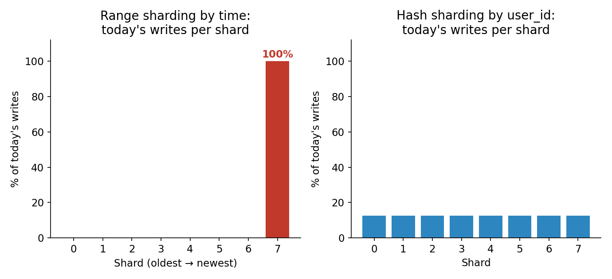
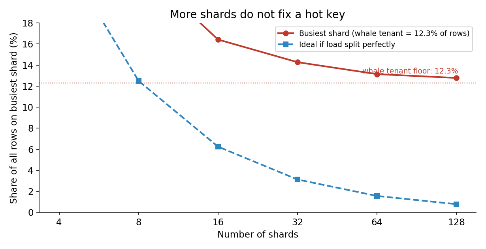

One database server can only get so big. You can buy a bigger machine — vertical scaling — until the biggest machine you can buy is not big enough. You can add read replicas until reads are free — but replicas do not help writes, because every write still lands on one primary. At some point the dataset outgrows one server's disk, or the write rate outgrows one server's CPU, and there is exactly one move left: split the database across many machines, each owning a slice of the data. That is sharding, and it is the last scaling lever and the most expensive one. Get the shard key right and ten machines hold ten times the data and absorb ten times the writes. Get it wrong and you have ten machines doing the work of one, plus a routing layer, plus a resharding project, plus a class of bugs that did not exist before.
This is Part 3 of System Design, Plainly: one concept per post, evergreen, beginner-friendly, with the concrete numbers and the failure modes. Today: sharding — what it is, the four ways to split the data, why the shard key is the highest-consequence decision in the system, and the three costs (cross-shard queries, rebalancing, and the hot key) that decide whether sharding was worth it.
The ELI5 version
Imagine a library with one librarian. She can shelve only so many books, and she can only check out so many per hour. The library grows, the queue grows, and hiring a faster librarian — a bigger server — stops working when the fastest librarian in the world is still too slow.
So you split the library into ten branches. Each branch holds a slice of the collection and has its own librarian. Now ten checkouts can happen at once, and the collection can grow tenfold. But three new problems appear, and they are the whole subject of this post.
First, you need a rule for which branch holds which book. Alphabetical by title? By author? By genre? That rule is the shard key, and it decides everything: how evenly the books spread, how fast a lookup is, and whether one branch ends up holding all the popular books while the other nine sit idle.
Second, you need a directory. A reader walks in and asks for a book — someone has to know which branch holds it without asking all ten. That someone is the routing layer, and every request pays for it.
Third, some questions now span branches. "How many books did we check out today?" used to be one query against one catalogue. Now it is ten queries and a merge. And "move this book from branch 3 to branch 7" used to be one transaction; now it is a distributed transaction, and if the move fails halfway, the book exists in two places or in none.
Sharding is not a performance optimization. It is a trade: you buy write throughput and storage capacity, and you pay with query complexity, operational complexity, and a new family of failure modes. The rule of thumb from every team that has done it: shard last. Tune the queries, add indexes, split hot tables vertically, add read replicas — and only when writes or storage genuinely exceed one node do you shard.
How it works: the shard key, then the four ways to split
The shard key is the decision
Every row is assigned to a shard by its shard key — one column (or a combination) whose value determines the destination. The key must satisfy two conditions that pull in opposite directions: it must spread load evenly, and it must be present in the queries you actually run. A key that spreads perfectly but never appears in a query is useless — every query becomes a scatter-gather across all shards. A key that appears in every query but concentrates load is worse — you sharded and still have a hotspot.
The classic good keys are tenant IDs and user IDs: high cardinality, evenly distributed, and present in nearly every query a multi-tenant app runs ("show me this user's orders"). The classic bad keys are timestamps and auto-incrementing IDs: every new row lands at the newest end of the key space, so the newest shard absorbs all writes. And a key with a whale — one tenant, one celebrity, one channel that holds 12% of all rows — cannot be fixed by adding shards, because a single key's rows are indivisible: they all live on one shard. More on that below.
Four schemes, one tradeoff: even spread vs locality
Range sharding assigns contiguous key ranges to shards — IDs 0–1M on shard 1, 1M–2M on shard 2. Keys stay sorted inside a shard, so a range scan ("last week's orders") touches one or two shards and is cheap. The price is the hot tail: writes keyed by time or by auto-increment ID all land on the shard owning the newest range. In our simulation, 100% of today's writes land on the newest shard under range-by-time sharding, while hash sharding spreads them evenly at 12.5% per shard. Range is the right answer when range scans dominate and writes are spread across the key space — time-series data with a hashed timestamp, or data keyed by something that does not grow monotonically. CockroachDB, TiDB, HBase, and Bigtable all shard by range internally, splitting a range when it grows past a size threshold (CockroachDB at 512 MiB, TiKV at 96 MB, HBase at 10 GB).
Hash sharding hashes the key first — shard = hash(user_id) % N — and destroys key ordering to buy uniform distribution. Consecutive user IDs scatter across shards, so no shard is hotter than any other, and the hot-tail problem disappears. The price is the range scan: adjacent values live on different shards, so "last week's orders" fans out to all of them. Hash is the right answer when lookups are by exact key and range scans are rare. DynamoDB and Redis Cluster hash-partition; MongoDB's hashed shard key uses MD5.
Consistent hashing fixes hash sharding's worst property: what happens when you add a shard. With hash(key) % N, changing N remaps nearly every key — our simulation on 200,000 keys shows adding a 9th shard to an 8-shard cluster moves 88.9% of keys, and adding a 10th moves 80.0%. A consistent-hash ring maps keys and nodes onto the same circle, and each key belongs to the next node clockwise — so adding one node moves only the keys that fall between it and its predecessor, about 1/N of the data. Same simulation: 11.0% move when going 8 → 9, 20.5% when going 8 → 10 (two nodes added). Virtual nodes — each physical node owns 200 points on the ring instead of one — smooth out the distribution so no node inherits a fat slice by luck. Cassandra and Dynamo use consistent hashing; it is also the mechanism from Part 1's load-balancing ring, applied to data instead of requests.
Directory-based sharding keeps an explicit lookup table — key → shard — instead of computing the placement from the key. It costs one extra lookup hop on every request, and the directory is a critical-path dependency. What it buys is freedom: you can move a single tenant to its own shard without rehashing anything, which is exactly the escape hatch for the whale tenant that hash and range sharding cannot handle. Vitess calls this a lookup vindex; multi-tenant SaaS products that isolate their largest customers on dedicated shards all run some version of it.

The routing layer, and what a query costs without the key
Between the application and the shards sits a router — a proxy that parses the query, works out which shards hold the rows, sends the query there, and merges the results. In Vitess this is VTGate; in MongoDB it is the mongos router; in Citus it is the coordinator node. The application still speaks ordinary SQL, but the cost of a query now depends on whether it carries the shard key.
Our simulation on a 16-shard cluster, per-shard capacity 1,200 queries a second, makes the arithmetic concrete. A targeted query — shard key present — touches one shard: cluster capacity 19,200 queries a second, p99 latency 12.6 ms. A lookup-vindex query — one extra hop to resolve the key — touches two shards: 9,600 queries a second, p99 22.6 ms. A scatter-gather — no shard key, ask all sixteen and merge — touches every shard: 1,200 queries a second, p99 20.4 ms, bounded by the slowest shard plus the merge. The scatter query costs sixteen times the work of a targeted one, so a workload that goes from 5% scatter to 50% scatter does not get 45% slower — it saturates the cluster. A small independent experiment that rebuilt the Vitess pattern on five real MySQL servers measured the same shape in the wild: 1,194 targeted reads a second, 710 with a lookup vindex, 307 scatter-gather. The shard key decides the price of a query, and a query without it is the most expensive thing in the system.

Secondary indexes and cross-shard transactions
Two things that were free on one node become expensive or impossible across shards.
Secondary indexes only work locally. An index on email inside each shard answers "find the user with this email" only by asking every shard — unless you build a global secondary index, a separate distributed structure that maps email → shard, which is itself a sharded table that must be kept in sync on every write. Most teams either route by the indexed column (make it the shard key) or accept the fan-out for rare queries.
Cross-shard transactions lose atomicity. Moving 10 credits between two accounts on different shards is two commits, and if the process dies between them, the credits exist in both places or in neither. A five-server experiment that simulated exactly this failure lost the credits in 52 of 2,000 transfers — 2.6% of cross-shard transfers silently half-applied. The fixes are well known and all cost something: two-phase commit (correct, but slow and blocking — a crashed coordinator leaves shards holding locks), the saga pattern (a sequence of local transactions with compensating actions that undo the earlier steps, which means your application has to know how to un-do a payment), or avoiding the problem entirely by co-locating related rows — putting a user's orders on the same shard as the user, so the common transaction never crosses a shard boundary. Distributed SQL systems (CockroachDB, Spanner, TiDB) keep ACID across shards with Raft consensus and distributed commit protocols, and charge for it in write latency.
The state of the art: three ways to shard in 2026
1. The proxy: Vitess (MySQL). Built at YouTube in 2010 after replicas and application-level sharding stopped being enough. It sits between the application and a fleet of MySQL servers: VTGate parses SQL and routes by vindex, vttablet multiplexes connections, and resharding and schema changes run online — a schema change builds a ghost table, backfills it, tails the binlog, and swaps it in, instead of locking a large table for an ALTER. Slack moved 99% of its MySQL traffic onto Vitess, peaking at 2.3 million queries per second. GitHub split its main cluster by schema domain first, then moved its largest domains onto horizontally sharded Vitess clusters; by 2023 it ran 1,200+ MySQL hosts, 300+ TB, and 5.5 million queries per second. PlanetScale runs Vitess as a managed service. The constraints reach into your schema: no stored procedures, triggers or events, no foreign keys across shards, limited cross-shard joins and transactions — most teams design around them without noticing. Vitess is now the reference answer for "we have MySQL and we have outgrown one primary."
2. The extension: Citus (PostgreSQL). Citus turns Postgres into a distributed database by adding hash-distributed tables to ordinary Postgres: the application still writes standard SQL, the coordinator routes it. It is now part of the Azure ecosystem and is the default answer for multi-tenant Postgres and for analytical workloads that outgrow one node. Like Vitess it uses a fixed shard count — create far more shards than nodes (say 1,000 shards across 10 nodes), map keys with hash(key) % 1000, and move whole shards when you add a node, never splitting them. The limit is that you can never have more nodes than shards, and if the original estimate was wrong, resharding means rewriting everything.
3. Distributed SQL: CockroachDB, TiDB, Spanner. These are sharded from birth — the storage engine is natively distributed (Raft consensus plus LSM trees), ranges split and rebalance automatically, and the application connects to a single endpoint while the database manages placement underneath. Cross-shard transactions are ACID and serializable. The tradeoff is write latency: a write that needs consensus across regions is slower than a write to one Postgres primary, and you are now operating a distributed system with its own failure modes. MongoDB sits in the middle: sharding is built in, you pick a shard key, and the balancer moves chunks (128 MB by default) between shards automatically. DynamoDB hash-partitions behind the scenes — each partition holds about 10 GB and roughly 3,000 read units — and its adaptive capacity shifts throughput to hot partitions, which papers over a mild hot key but cannot save a truly indivisible one.
The honest 2026 summary: managed distributed databases have made sharding boring in the good sense — automatic rebalancing, online schema changes, and cross-shard transactions without DIY complexity. What they have not changed is the shard key. No system picks it for you, and a bad one still costs you the cluster.

Why it breaks
Every sharding outage is one of these six:
- The hot key. One tenant, one celebrity, one flash-sale SKU — a single key that holds a large share of rows or receives a large share of writes lands wholly on one shard, and no shard count helps. Our simulation: a whale tenant holding 12.3% of all rows leaves the busiest shard at 12.8% of rows even at 128 shards, against an ideal 0.78%. An independent Vitess rebuild measured the same shape: the busiest channel held 12.3% of messages, and at 128 shards the busiest shard still held 14.6%. Fixes, in order of cheapness: split the hot key (per-region copies, a suffix on the key to spread one logical key across shards), replicate it, or move the whale to a dedicated shard via a directory — never just add shards.
- The scatter-gather avalanche. A new feature ships a query without the shard key — a dashboard, an admin search, a report. It fans out to every shard on every request, consumes sixteen times the work, and the cluster saturates at one-sixteenth of its rated capacity. Guard it with a lint rule (GitHub's approach when it split by schema domain: linters that reject cross-domain joins) or a query governor that refuses fan-out above a threshold.
- The resharding project. You outgrow your shard count and must redistribute live data. DIY resharding is a maintenance window, dual writes, a backfill, and a cutover — YouTube's first reshard took an entire night of primary downtime, and Slack's migration from one shard key to another ran from 2016 to 2020 with double writes and a parallel read-diffing system. Managed systems do it online (Vitess splits a shard with zero write errors in the five-server rebuild: 2,158 lookups, every message found exactly once, on the right shard), but it is still a project, not a config change. Design the rebalancing strategy before you need it.
- The cross-shard transaction that half-applied. Two commits, one crash between them, and money or inventory exists twice or not at all. If a business operation spans shards, either co-locate the rows, use a saga with compensating actions, or accept two-phase commit's latency and blocking — do not assume two local transactions equal one distributed one.
- The schema change multiplied. A 30-second ALTER TABLE becomes 30 seconds × 16 shards, and every one must succeed. Rolling migrations need tooling — Vitess's ghost-table flow, or a migration runner that applies the change shard by shard with a rollback plan. A migration that fails on shard 14 of 16 is a partial schema, which is worse than no migration.
- The rebalance that moved the hot shard onto the small node. Rebalancing moves data, and moving data costs network and disk. At petabyte scale, even consistent hashing's "only K/N keys move" is terabytes of transfer — adding one node to a 10-node cluster still moves 10% of all data. Rebalance during low traffic, throttle it, and never let an automatic balancer migrate a hot range onto a node that is already saturated.

The interview angle
"Design Twitter / Instagram / WhatsApp" is a sharding question in disguise, and the expected answer is a tour of exactly this post: shard only after vertical scaling, replicas, and indexes are exhausted; pick the shard key by the queries you actually run (user ID for a social app, tenant ID for SaaS); hash for even spread, range when range scans dominate, consistent hashing so adding a node moves ~1/N of the data instead of ~90%; a router in front, targeted queries cheap, scatter-gather expensive; co-locate related rows so transactions stay single-shard; and name the failure modes — hot key, scatter-gather avalanche, resharding, half-applied cross-shard transactions.
The follow-ups that separate good answers from great ones: how do you choose the shard count? (fixed and generous — far more shards than nodes — so you move whole shards, or let the system split ranges automatically at a size threshold); what happens when a shard dies? (each shard is itself replicated — sharding is about scale, replication is about availability, and you need both); how do you run a query that needs all shards? (you fan out, but you budget for it — aggregations and reports go to a read replica, a warehouse, or a pre-computed rollup, not to the live shards); and when is sharding the wrong answer? (when the dataset fits on one node with room to grow, when the workload is read-heavy — replicas fix that — or when every query needs a cross-shard join, which means the data model was not designed for sharding in the first place).
In the real world, the decision is usually not which scheme to implement — it is which system to buy. Vitess if you are on MySQL and outgrowing one primary, Citus if you are on Postgres, CockroachDB or TiDB if you are starting greenfield and want the database to manage placement, MongoDB or DynamoDB if your data model fits a document or key-value shape. The scheme still matters, because the system does not pick your shard key — and the shard key is the one decision that follows you for the life of the system.
Takeaways
- Sharding is the last scaling lever, not the first: vertical scaling, indexes, and read replicas come first — shard only when writes or storage genuinely exceed one node.
- The shard key is the highest-consequence decision in the system: it must spread load evenly and appear in the queries you run — a key that does one without the other is a hotspot or a scatter-gather.
- Adding a node must not move your data:
hash(key) % Nremaps 88.9% of keys when going 8 → 9 shards; a consistent-hash ring moves 11.0%. That is why the ring exists. - A query without the shard key costs 16× the work on a 16-shard cluster: targeted 19,200 qps, lookup vindex 9,600, scatter-gather 1,200 — and its p99 is bounded by the slowest shard.
- More shards do not fix a hot key: a whale tenant holding 12.3% of rows leaves the busiest shard at 12.8% even at 128 shards, against an ideal 0.78%. Split the key, replicate it, or move the whale to its own shard.
- Cross-shard transactions are not atomic by default: two commits with a crash between them half-applied 2.6% of transfers in one experiment. Co-locate related rows, use sagas, or pay for two-phase commit.
- Try it yourself. The companion notebook replays all four simulations: the 88.9% vs 11.0% remap, the whale-tenant floor (12.8% at 128 shards), the scatter-gather throughput collapse (19,200 → 1,200 qps), and the range-vs-hash write split (100% vs 12.5% on the newest shard).
This is Part 3 of System Design, Plainly. Part 4 — Message Queues — is next. Follow me on dev.to (@danielsamfdo) so you don't miss it.
Sources: Vitess / PlanetScale docs and engineering history (YouTube 2010 origin; Slack 99% of traffic, 2.3M qps peak; GitHub 2023, 1,200+ hosts, 300+ TB, 5.5M qps — company-reported); "How YouTube, Slack and GitHub Shard MySQL" (devops-daily / dev.to, Oct 2026 — independent five-server Vitess-pattern rebuild: targeted 1,194 vs lookup 710 vs scatter 307 reads/s; 52/2,000 half-applied cross-shard transfers; 14.6% busiest shard at 128 shards; Slack re-shard 2016–2020; YouTube first reshard "an entire night of master downtime"); HLD Handbook, "Partitioning Schemes: Range, Hash, Consistent Hash, Directory" (CockroachDB 512 MiB / TiKV 96 MB / HBase 10 GB split thresholds; fixed-shard systems Citus, Riak, Elasticsearch, Couchbase); ByteLedger, "Database Sharding Explained 2026" (Citus 12, Vitess 18, CockroachDB 23.x); MongoDB sharding docs (chunk balancing; MD5 hashed shard key); DynamoDB partitioning (hash partitions, ~10 GB / 3,000 RCU per partition, adaptive capacity). All simulation numbers are from the companion notebook and the diagrams in this post; toy diagrams are labelled illustrations. No content about excluded vendors appears in this post.